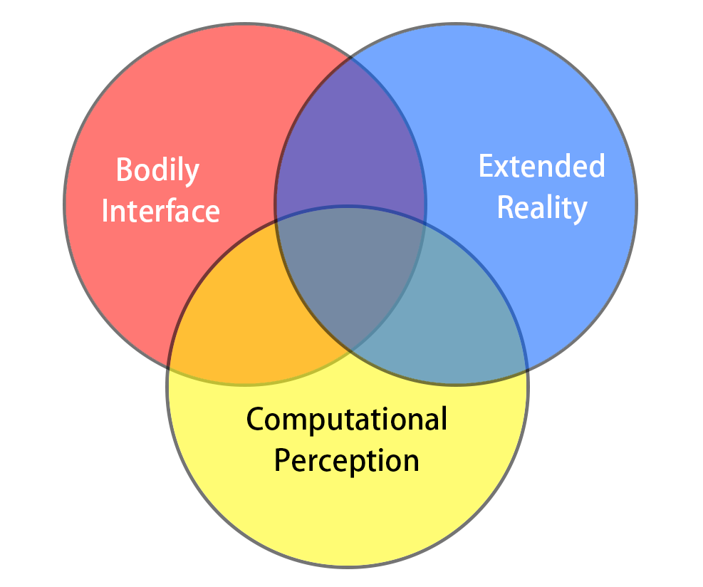

|

- [Aug 2021] Received UIST Registration Scholarship!
- [Aug 2021] Two papers (1st and 2nd) has been accepted at CHI PLAY 2021! ;)
- [May 2021] Received CHI 2021 Student Volunteer Award! ;)
- [Apr 2021] I will join the DIVA HCI Group and Augmented Perception Lab as a research intern!
- [Apr 2021] Received the Ableton Scholarship for NIME 2021!
- [Mar 2021] Received the Bridge to VR scholarship at IEEE VR 2021!
- [Feb 2021] One 1st-author paper is conditionally accepted at CHI 2021 Interactivity!
- [Jan 2021] One co-author paper is conditionally accepted at CHI 2021!
|
Research
Note: ACM CHI, ACM UIST, IEEE VR, IEEE ISMAR, and ACM CHI PLAY are generally recognized as top-tier (CORE A/A*) conferences in my field of HCI and VR/AR.
Representative papers are highlighted.
|
|
|
Myopic Bike and Say Hi: Games for Empathizing with Myopic Users
Xiang Li,
Xiaohang Tang,
Xin Tong,
Rakesh Patibanda,
Florian ’Floyd’ Mueller and,
Hai-Ning Liang
ACM CHI PLAY EA, 2021 SGDC Finalist
[video]
[paper]
I am the presenting author at CHI PLAY 2021. :)
Collaborative project with Exertion Games Lab & Duke University (Kunshan Campus).
|
|
|
Actuating Myself: Designing Hand-Games Incorporating Electrical Muscles Stimulation
Rakesh Patibanda,
Xiang Li,
Yuzheng Chen,
Aryan Saini,
Chris Hill,
Elise van den Hoven and,
Florian ’Floyd’ Mueller
ACM CHI PLAY EA, 2021
[paper]
Interned at the Exertion Games Lab.
|
|
|
Limited Control Over The Body As Intriguing Play Design Resource
Florian ’Floyd’ Mueller,
Rakesh Patibanda,
Richard Byrne,
Zhuying Li,
Yan Wang,
Josh Andres,
Xiang Li,
Jonathan Marquez,
Stefan Greuter,
Jonathan Duckworth and
Joe Marshall
ACM CHI, 2021
[video]
[paper]
Interned at the Exertion Games Lab.
|
|
|
vrCAPTCHA: Exploring CAPTCHA Designs in Virtual Reality
Xiang Li,
Yuzheng Chen,
Rakesh Patibanda and
Florian ’Floyd’ Mueller
ACM CHI EA, 2021
[video]
[paper]
[code]
I am the presenting author at CHI 2021. :)
Interned at the Exertion Games Lab.
|
|
|
Results and Guidelines from a Repeated-Measures Design Experiment Comparing Standing and Seated Full-Body Gesture-Based Immersive Virtual Reality Exergames: Within-Subjects Study
Wenge Xu,
Hai-Ning Liang,
Xiang Li,
Yuzheng Chen,
Kangyou Yu, and
Qiuyu He
JMIR Serious Games, 2020 (IF=4.143)
[video]
[paper]
|
|
|
Exploring Visual Techniques for Boundary Awareness During Interaction in Augmented Reality Head-Mounted Displays
Wenge Xu,
Hai-Ning Liang,
Yuzheng Chen,
Xiang Li and
Kangyou Yu
IEEE VR, 2020 Best Paper Nomination
[video]
[paper]
I am the presenting author at IEEE VR 2020. :)
|
|
|
Exploration of Hands-free Text Entry Techniques For Virtual Reality
Xueshi Lu,
Difeng Yu,
Hai-Ning Liang,
Wenge Xu,
Yuzheng Chen,
Xiang Li and
Khalad Hasan
IEEE ISMAR, 2020
[video]
[paper]
|
|
|
VirusBoxing: A HIIT-based VR Boxing Game
Wenge Xu,
Hai-Ning Liang,
Xiaoyue Ma and
Xiang Li
ACM CHI PLAY EA, 2020 SGDC Finalist
[video]
[paper]
|
|
Professional activities, Awards & Talks
Reviewing (30+ Papers):
- 2021: VRST, IEEE VR & IEEE TVCG, CHI, IUI, CHI PLAY, IEEE ISMAR* & IEEE TVCG*.
- 2020: IMWUT, IEEE ISMAR* & IEEE TVCG*, VRST, CHI PLAY.
(*) received special recognition for reviewing.
Student Volunteer:
- 2021: CHI PLAY, CHI, TEI, DIS, MobileHCI.
- 2020: CHI PLAY, IEEE AIVR, IEEE ISMAR.
Presentations:
- Myopic Bike and Say Hi: Games for Empathizing with Myopic Users. ACM CHI PLAY 2021
- vrCAPTCHA: Exploring CAPTCHA Designs in Virtual Reality. ACM CHI 2021
- Feasibility and Effectiveness of Gesture-based Virtual Reality Seated Exergames. Exertion Games Lab
- vrCAPTCHA: Exploring CAPTCHA Designs in Virtual Reality. Exertion Games Lab
- Exploring Visual Techniques for Boundary Awareness During Interaction in Augmented Reality Head-Mounted Displays. IEEE VR 2020
Invited Talk:
- Introduction to VR, AR, and Human-Computer Interaction. Xi’an Jiaotong-Liverpool University Museum
- Exploring Visual Techniques for Boundary Awareness During Interaction in AR HMDs. ChinaVR 2020
- An Undergraduate Student’s Academic Plan. Xi’an Jiaotong-Liverpool University Library
Awards:
- ACM UIST 2021 Registration Award.
- ACM CHI 2021 Student Volunteer Award.
- NIME 2021 Ableton Scholarship.
- IEEE VR 2021 Bridge to VR Scholorship.
- ACM CHI PLAY 2020 Student Game Design Competition Award Finalist.
- Research Assistant Fellowship at XJTLU ($1,400).
- IEEE VR 2020 Best Conference Paper Nominee (5%).
- Student Representative in Academic Practice Sub-Committee (1 of the Univ.).
- Summer Undergraduate Research Fellowship (SURF) at XJTLU.
|
Template modified from here.
|
|